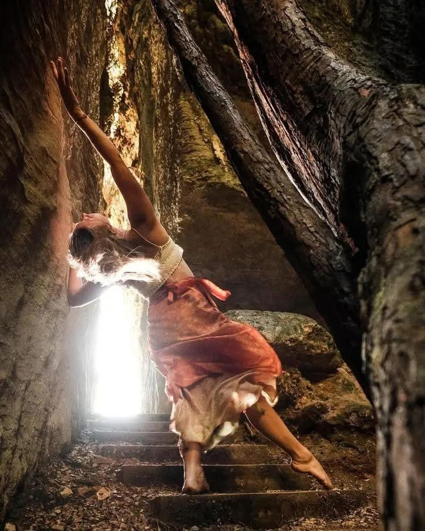

Women’s
Intuitive
Movement
These sessions invite you to enter the subtle layers of your body through breath, awareness, imagination and intuitive movement.
Session details
About
the Practice
Together, we journey through elemental landscapes, using imagery, sensation, movement and playful imagination to enter each landscape more deeply. Along the way, gentle prompts and questions invite you to explore what you encounter: how you are currently moving through space and time, what your body is holding, what is asking for attention, and what it may already know.
There is room here for curiosity, play and the freedom to imagine. Rather than following choreography or trying to create a particular kind of movement, you are invited to let the landscape spark something in you. You might wander, pause, shift, soften, resist, expand or surrender. The imagination becomes a doorway, and the body becomes a place to explore what lies beyond the familiar.

Deeper
Listening
You are held within a gently guided space where there is no right way to move and no particular destination to reach. Each landscape offers a different world to enter, and each person will experience it in their own way.
The landscape becomes a mirror, the body becomes the terrain, and movement becomes a pathway into deeper listening and knowing.
Fortnightly
Sessions
A 1.5-hour movement and self-inquiry session held fortnightly at Kōtinga Hall, following the rhythm of the waxing and waning moon.
Enquire about session datesKōtinga Hall
$20–30 per session.
Join the mailing list
Receive women’s movement updates from Alexandra. Open the email below and send your request to join.